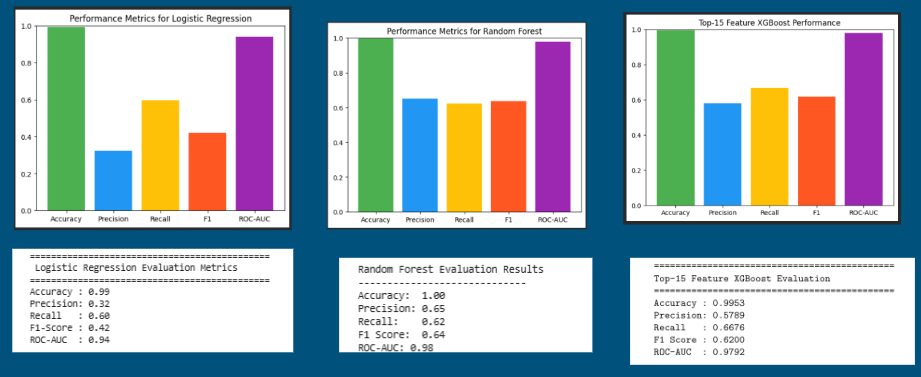

Project Overview
In real-world credit card fraud detection, false positives can cause legitimate transactions to be incorrectly flagged. Our project explores fraud detection to see how precision can be increased while still maintaining strong model performance.
Our project uses machine learning to classify credit card transactions as Fraud or Not Fraud. Throughout the project, we compared multiple models and improved our approach through feature engineering, threshold tuning, and explainable AI. We ultimately selected XGBoost as our final model and deployed it through Streamlit.
How Our Model Works
This is a supervised learning classification problem. We trained models using previous transactions labeled as either fraudulent or legitimate.
Model Comparison
We tested Logistic Regression, Random Forest, and XGBoost and compared their performance using accuracy, precision, recall, F1 score, and ROC-AUC.

Models Tested
Logistic Regression
Random Forest
XGBoost
Final Model: XGBoost
We selected XGBoost as our final model. It performed well at identifying rare fraud patterns and provided a strong balance between precision and recall. We then used SHAP to better understand its predictions.
Model Inputs
The deployed application receives transaction information including the transaction amount, time, credit card number, merchant category, Unix time, and date of birth. These inputs are used to generate engineered features related to spending behavior and transaction patterns.
Model Output
The model outputs a classification of Fraud or Not Fraud. SHAP is then used to explain which features influenced that prediction.
Final Model Performance
After feature engineering and threshold tuning, our final XGBoost model achieved:
Accuracy
99.53%
Precision
57.89%
Recall
66.76%
F1 Score
62.00%
Precision is important in our project because false positives can cause legitimate transactions to be incorrectly flagged. Recall is also important because missing actual fraud can result in financial loss.
Impact & Responsible AI
Positive Impact
Using explainable AI helped us identify problems affecting our model, such as overreliance on certain features and false positives. These insights helped guide our feature engineering and threshold tuning, which improved precision and made the model more transparent.
Current Limitations
The model is still not perfect. Increasing precision can reduce recall, which means reducing false positives may also result in more fraudulent transactions being missed.
Bias & Mitigation
Class Imbalance
Fraudulent transactions are much less common than legitimate transactions, which can cause the model to favor the majority class.
We used SMOTE on the training data to help address this imbalance.
Feature Reliance
Earlier versions of our model depended too heavily on transaction amount.
We added features related to spending patterns, transaction frequency, and time so the model would not rely mainly on one feature. SHAP helped us identify which features were influencing predictions.
Dataset Limitation
Our dataset contains simulated U.S. credit card transactions. Simulated data may not capture all of the patterns, behaviors, and biases found in real-world transactions.
Future testing with real-world data is necessary to evaluate how well this approach generalizes.
Threshold tuning was also used to reduce unnecessary fraud alerts while balancing the trade-off between precision and recall.
Try Our Fraud Detection Model
Upload a transaction CSV to see whether the model predicts the transaction as Fraud or Not Fraud and view its SHAP explanation.
Next Steps
- Continue improving precision while minimizing the decrease in recall.
- Explore additional feature engineering and hyperparameter tuning.
- Test and validate the approach using real-world transaction data.
- Explore API endpoints and real-time transaction streaming.
- Explore containerization for future deployment.
Team Members
Ashriya Tuladhar • Hadi Malik • Aliyu Aliyu • Mohamed Awad • Brownkaine Forchick